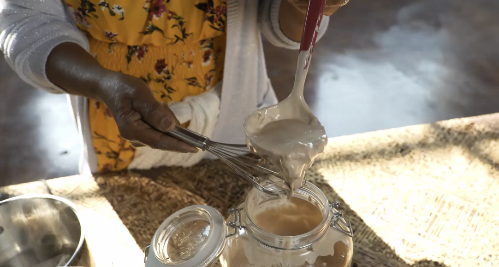

Absit

Absit: The Gelatinization Process
According to Maskal Teff, "Absit is the gelatinization process, and one of the many steps that create the right texture, characteristics, and bubble formation (eyes) in injera. In gelatinization, starches are hydrated to produce a gel-like texture.
Furthermore, "After several days of fermentation, a small amount of batter is removed (or you may use raw flour) and cooked for several minutes in hot water. The mixture will thicken into a pudding-like consistency. Add it back to the main fermented batter after it cools and then make the injera in the next few hours or up to a day later.
Ingredients
- 2 cups (473g) water
- 1 cup (274g) batter
- 2-4 cups (473g-946g) of room temperature water
How to Make Absit
- After 1-3 days, open the container with the batter and discard the top water. The dough will have become more like a thick batter than a dough. Mix thoroughly.
- Bring 2 cups of water to a boil then turn the heat down to a medium-low. Add about 1 cup of batter to the water while whisking to avoid clumping. Then turn heat back to medium-high to bring mixture to a boil.
- Once it has bubbled, add the mixture into the batter and dilute with 1-2 additional cups of water until desired consistency is reached. The batter should be thick enough to lightly coat the spoon but not so thick that you cannot see the spoon.
- Ensure the batter is the right consistency as no pure water can be added after the final fermentation is complete.
- Seal with the lid and leave in a dark and dry room until small bubbles form towards the surface, anywhere from 1-4 hours. We have found 2 hours in the fridge works well.